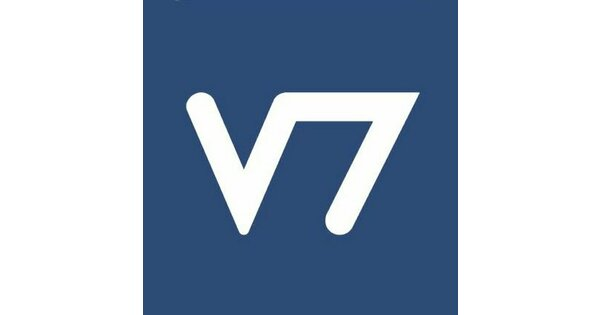

Top Project
Startup · Co-Founder & Lead Developer
SevenTask
A full-stack task-management platform I co-founded and drove from first commit to 200+ monthly active users. I designed the architecture, chose the Angular + .NET + SQL Server stack, and shipped the core experience — a drag-and-drop Kanban board, calendar, real-time chat, authentication, and Swagger-documented REST APIs — while leading a 5-person team and using A/B testing to prioritize what to build next.
Angular.NET
SQL ServerREST / Swagger
KanbanReal-time Chat
200+Monthly users
5Engineers led
2+ yrsBuilt & shipped